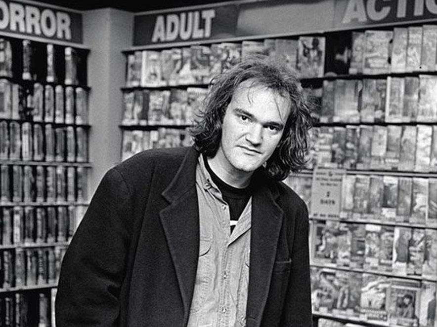
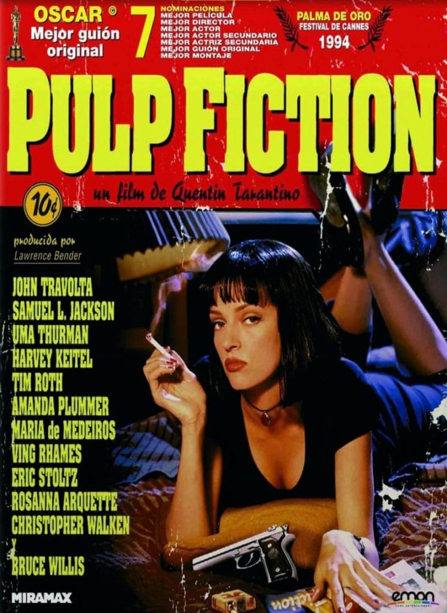
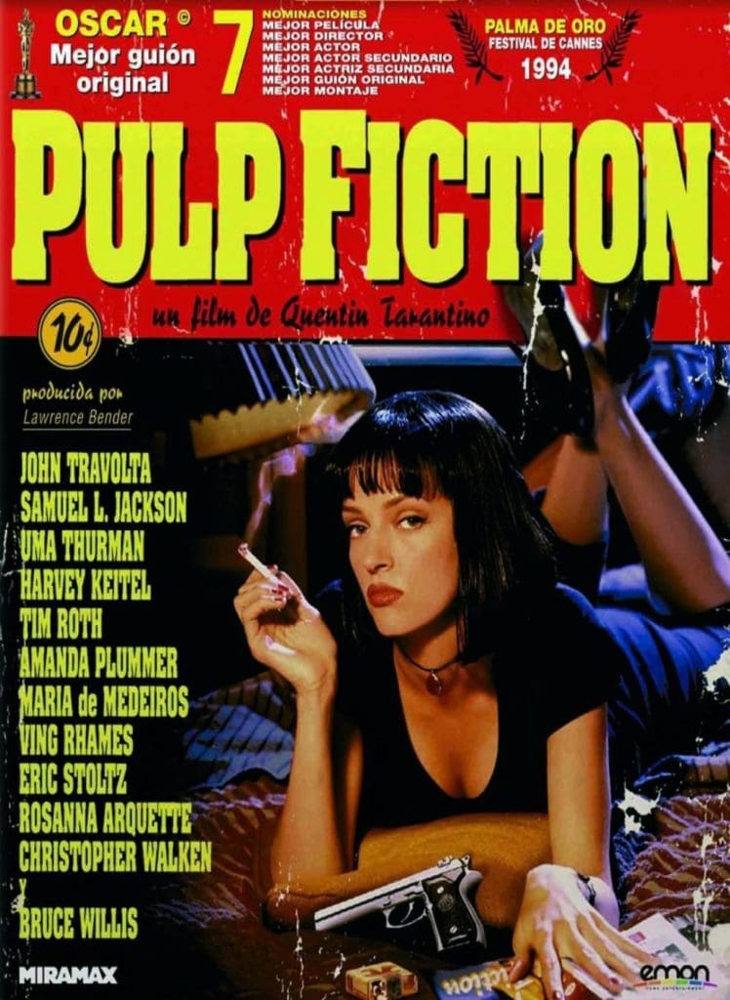
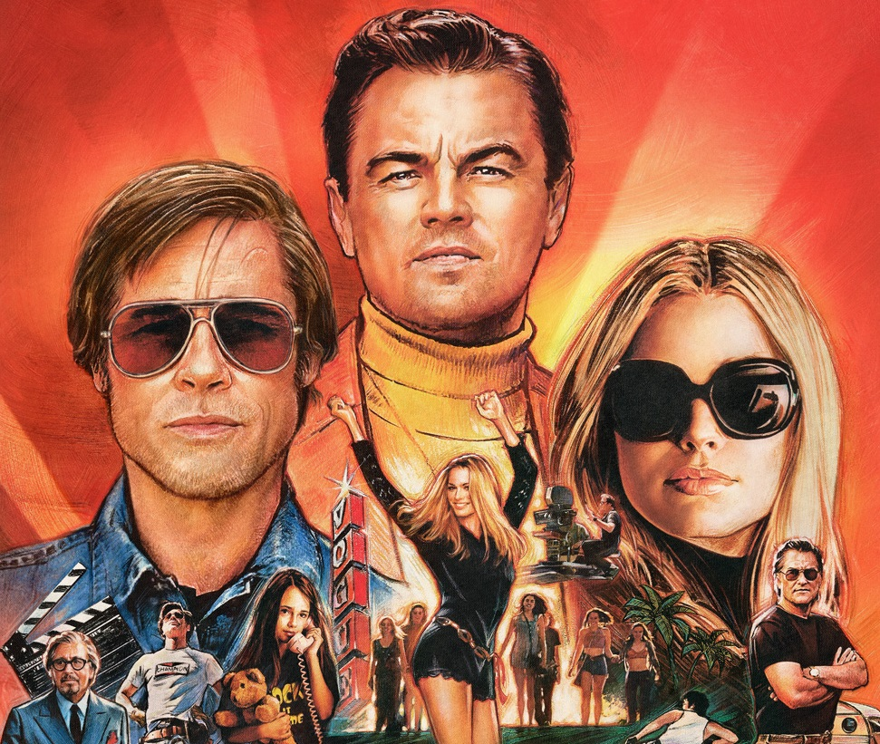

Quentin Jerome Tarantino
Nació el 27 de marzo de 1963 en Knoxville, Tennessee (Estados Unidos)
Mide 1’85.
Quentin Jerome Tarantino es un director, guionista, productor y actor estadounidense que nació en la localidad estadounidense de Knoxville, ubicada en el estado de Tennessee.
En el momento de nacer, sus padres, Tony, un estudiante de Derecho, y Connie, estudiante de Enfermería, solamente tenían 21 y 16 años de edad.
La pareja bautizó a su hijo con el nombre de Quentin basándose en el personaje de Burt Reynolds (Quint Asper) en la serie televisiva del Oeste “Gunsmoke”, emitida en español como “La Ley Del Revólver”.
A los dos años de edad, el pequeño Quentin se trasladó con su madre a Los Angeles, ciudad en la que Connie contrajo matrimonio con Curt Zastoupil. Desde niño, e influenciado por su madre, Tarantino acudió a menudo al cine, escuchó música rock, leyó publicaciones pulp y vio numerosas series de televisión. En su adolescencia abandonó los estudios y comenzó a trabajar como acomodador de un cine porno.
En el año 1985 consiguió un trabajo en un videoclub, el Video Archive de Manhattan Beach (California), lugar en donde acrecentó su ingente cultura cinematográfica.

En el videoclub, Quentin entabló amistad con el estudiante de cine Roger Avary y conoció al productor John Langley, quien quedó prendado del amplio conocimiento del medio audiovisual que poseían los dos cinéfilos.
Langley les contrató para trabajar como asistentes de producción de “Maximum Potencial” (1987), un título de ejercicios destinado al mercado del vídeo en el que Dolph Lundgren ponía de manifiesto sus habilidades en el body building, las artes marciales y el boxeo.
Avary y Tarantino comenzaron a finales de los años 80 a escribir su primer guión conjunto, “True Romance”, que en el año 1993 fue adaptado al cine por Tony Scott con el título de “Amor a Quemarropa”. Por esa época, Quentin dirigió una comedia inacabada titulada “My Best Friend’s Birthday” (1987), co-escrita junto a Craig Hamman.
En los primeros años de la década de los 90, Tarantino conoció al productor Lawrence Bender, quien recibió con entusiasmo el guión de “Reservoir Dogs”. Poco después puso el texto en conocimiento del actor Harvey Keitel. Keitel avaló el proyecto en la producción y la interpretación y comenzaron a rodar el guión. El violento y estiloso thriller “Reservoir Dogs” (1992) cosechó un gran reconocimiento crítico en el Festival de Sundance y se convirtió rápidamente en un título de culto.
El talento cinematográfico de Tarantino, inspirado por un eclecticismo cinéfilo que bebe de fuentes diversas (desde John Woo, Martin Scorsese o Sam Fuller hasta Howard Hawks, Phil Karlson, Sergio Leone o la Nouvelle Vague) y singularizado por una sugestiva estructura temporal, un destacado dominio del espacio cinematográfico y un amplio conocimiento de la cultura pop apreciable en sus sagaces textos, se consolidó dos años después con el triunfo de “Pulp Fiction” (1994), título que revitalizó la carrera de John Travolta, ganó la Palma de Oro en el prestigioso Festival de Cannes, y fue nominado a siete premios Oscar, entre ellos, al de mejor película. Quentin Tarantino y Roger Avary lograron la estatuilla al mejor guión original.
 
En el año 1994, Tarantino realizó un episodio de la serie de televisión “Urgencias”, antes de dirigir un episodio de la película “Four Rooms” (1995) y regresar al largometraje con “Jackie Brown” (1997), film recibido con disparidad de opiniones que adaptaba una novela de Elmore Leonard. La película estaba protagonizada por la reina del blaxploitation, Pam Grier.
En el año 2003 estrenó “Kill Bill: Vol. 1”, una película de artes marciales en donde recuperó la figura de David Carradine, el protagonista de la mítica serie de televisión de los años 70 “Kung Fu”.
Quentin Tarantino ha aparecido como actor, al margen de sus propias películas, en títulos como “Duerme Conmigo” (1994), “Alguien a Quien Amar” (1994), “Johnny Destiny” (1995), “Desperado” (1995), “Abierto Hasta El Amanecer” (1996), “Girl 6” (1996) o la comedia “Little Nicky” (2000). Como guionista escribió las películas “Amor a Quemarropa” (1993) de Tony Scott, “Asesinos Natos” (1994) de Oliver Stone (aunque descontento con los resultados sólo apareció como creador de la historia) y la citada “Abierto Hasta El Amanecer” (1996), dirigida por Robert Rodríguez. Como productor ha participado en “Sombras Del Pasado” (1992), “Killing Zoe” (1994), película que supuso el debut como director de Roger Avary, “Abierto Hasta el Amanecer” (1996) o, entre otras, “Tú Asesina, Que Nosotros Limpiamos La Sangre” (1996).
Tras las películas de “Kill Bill”, Tarantino regresó a la dirección con “Grindhouse” (2007). Para esta sesión doble compartida con Robert Rodríguez, Tarantino dirigió la película con psicópata “Death Proof”. Poco después estrenó “Malditos Bastardos” (2008), película bélica ambientada en la Segunda Guerra Mundial con el protagonismo de Brad Pitt. Por este film fue candidato al Oscar como mejor director y guionista.
Homenajeó a los spaghetti westerns en “Django Desencandenado” (2012), película en la que volvió a contar con Christoph Waltz. Jamie Foxx era el Django del título. Por este film, Quentin logró su segundo premio Oscar al mejor guión original. Tres años después volvió al género del western para estrenar “Los Odiosos Ocho” (2015).
En el año 2019, con Leonardo DiCaprio y Brad Pitt como principales protagonistas, estrenó “Érase Una Vez En… Hollywood” (2019), historia centrada en dos actores en el Hollywood de finales de los años 60. Por este último film, Tarantino ganó un Globo de Oro al mejor guión y otro a la mejor película de comedia. También fue nominado al Oscar a la mejor dirección y el mejor guión original.
